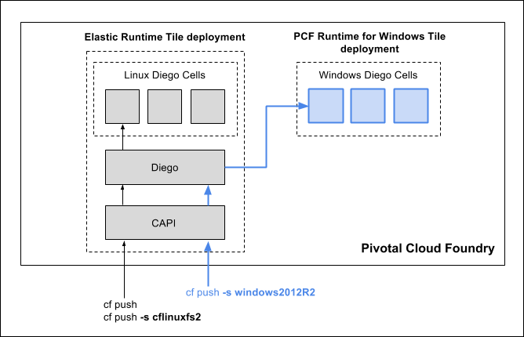

Using PAS for Windows 2012R2
Note: Elastic Runtime has been renamed Pivotal Application Service.
This documentation describes how operators install and manage Windows Diego cells in Pivotal Cloud Foundry (PCF) with PAS for Windows 2012R2 and how developers push .NET Framework applications to Windows cells.
Operators can install PAS for Windows 2012R2 on Microsoft Azure, VMware vSphere, Amazon Web Services (AWS), or Google Cloud Platform (GCP).
Overview
Operators who want to enable developers to push .NET Framework applications can deploy Windows-based Diego cells in PCF with the PAS for Windows 2012R2 tile.
Deploying this tile creates a separate BOSH deployment populated with the Garden-Windows BOSH release, which runs on a Windows cell built from a Windows Server 2012R2 stemcell. This lets PCF deploy Windows-based Diego cells in addition to Linux-based Diego cells.
Once the Windows cell is running and after developers build their applications, they can then specify the windows2012R2 stack when pushing .NET Framework apps from the command line or PowerShell session. Using the Diego infrastructure, PCF passes the app to the Windows cell in the PAS for Windows 2012R2 deployment. The diagram below illustrates the process.

Requirements
When configuring the Windows deployment, the minimum resource requirements for each Windows cell are as follows:
- Disk size: 64 GB
- Memory: 16 GB
- Number of CPUs: 4
By design, PAS for Windows 2012R2 only supports deployments based on Windows Server 2012R2.
Due to Microsoft’s licensing requirements, operators must either bring their own licensed copies of Windows Server (for on-premise deployments) or pay the surcharges associated with Windows Server licensing determined by the IaaS provider on Azure, AWS, and GCP.
Understanding PAS for Windows 2012R2
Installing PAS for Windows 2012R2
Managing Windows Cells
Developing on Windows Cells
Limitations
Deployments of Windows Diego Cells with PAS for Windows 2012R2 have the following limitations:
Because of the process management characteristics of Windows Server 2012R2, Windows cells can host a maximum of 40 app instances per cell. Operators should take this density constraint into account when planning the sizes of their PAS for Windows 2012R2 deployments, in addition to CPU, disk, and memory needs.
The following Cloud Foundry features are not supported by PAS for Windows 2012R2:
- Diego SSH, i.e. the
cf sshcommand. This is due to limitations of the inherent file system isolation characteristics of Windows Server 2012R2. - Volume services. For mounting SMB shares, developers should access SMB volumes from their applications directly.
- Container-to-container networking. The IronFrame library that provides container-like features on Windows Server 2012R2 does not support container networking. IronFrame binds virtual container ports to the host.
- Diego SSH, i.e. the
The following Windows technologies are not supported by PAS for Windows 2012R2:
- Active Directory Domain Services, i.e. joining Windows cells to an Active Directory domain.
- Integrated Windows Authentication. Instead, operators should deploy Active Directory Federation Services and the Pivotal SSO tile to enable OAuth-based authentication.
You cannot push Docker or other OCI-compatible images to Windows cells.
Known Issues
PAS for Windows 2012R2 has the following known issues:
In the PAS for Windows 2012R2 tile Credentials tab, the
vcapcredentials that appear when you click VM Credentials > Link to Credential do not apply to Windows cells, since they do not yet have a vcap user.Under VM Options > Manage Administrator Password > Set the password, setting the
Administratoruser password has the following issues:- For Azure-hosted deployments: Setting the password directly does not yet work. All passwords for the user called
Administratorwill be randomized by default. Please use the following workarounds to access the VM directly:- Create a user in the Azure cloud management console.
- Use the Enable SSH feature.
- For GCP-hosted deployments: Setting the password directly does not yet work. Please use the following workarounds to access the VM:
- Create a user in the GCP cloud management console.
- Use the Enable SSH feature.
- For AWS and vSphere deployments: You can set a password for the user called
Administrator, but the password must be 8-14 characters and is limited to letters, numbers, and the!character, which is the only working special character. - For all IaaSes, for stemcell versions 1200.5 and later, the password for the user called
Administratoris randomized by default to provide additional security in production settings.
- For Azure-hosted deployments: Setting the password directly does not yet work. All passwords for the user called
The controls in the Advanced Features pane have no effect.
In the Resource Config pane, setting VM disk sizes has the following limitations. See the Root Disk Sizing table for details:
- AWS: For stemcells earlier than 1200.9, setting disk size value has no effect. VM disks are 30 GB.
- GCP: Setting the disk size only works for values 50 GB or larger.
- vSphere: Setting disk size value has no effect. VM disks will match the disk size of the stemcell you create.
When a PAS for Windows 2012R2 container shuts down, it may leave behind ghost connections and pending transactions that put the app in an inconsistent state. This is due to a known limitation of the IronFrame containerization framework. See the Container Shutdown section for details.